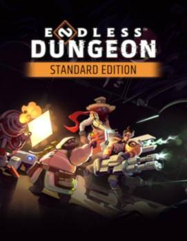
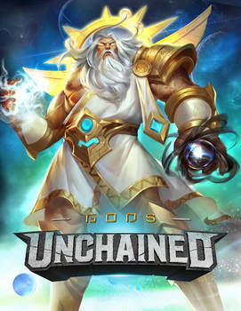
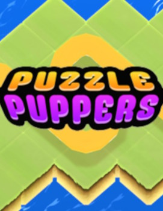
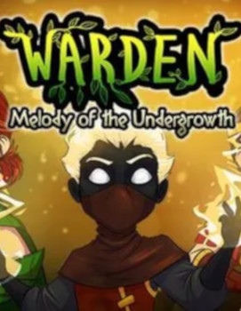

Experienced Unity & Game Programmer
If you'd like to chat about a job opportunity, please reach out via Email or LinkedIn!
Calum has transformed the technical culture on our small team. Right from his first day on the job, he's shown strong, compassionate leadership.
He's worked to create a collaborative, high-trust environment where we work together to serve the needs of our team and players.
Cal stands by his (excellent) principles, but is ALWAYS ready to listen, learn, adapt and grow.
— Tim Knauf, Technical co-founder at 2UP Games (Read more on LinkedIn)
|
 ENDLESS™ Dungeon PC, Consoles |
 Gods Unchained PC, Mobile |
 Puzzle Puppers PC, Switch, Mobile |
 Warden: MOTU PC, Consoles |
I have had the pleasure of working with Calum at Amplitude Studios and can provide an unqualified recommendation.
On top of being a highly competent gameplay programmer and software architect, Calum has invaluable experience as both a designer and as a producer,
and so has been a vital sounding board and sanity check for game design and project planning proposals.
— William Dyce, Game Director at Amplitude Studios (Read more on LinkedIn)
See more details about my experience on LinkedIn.
I've worked with Calum at two separate companies in a variety of capacities, sometimes as a direct report, sometimes as a fellow lead, but every time it has been an absolute pleasure.
Calum is an incredibly talented programmer, a caring and supportive manager who has and always will prioritise his teams wellbeing over his own, and an all-round lovely human being.
He is a credit to any team that he's on and he's a genuine, steady and consistent force for positivity in the workplace, I would work with him again in a heartbeat.
— Trev Clift, Senior Technical Artist at Immutable (Read more on LinkedIn)
During the development of Warden, I built multiple systems for the game that I then turned into generic plugins, and published on the Unity Asset Store.
I'm currently looking for work, get in touch!
Email
|
LinkedIn